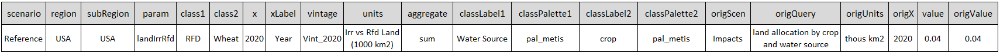
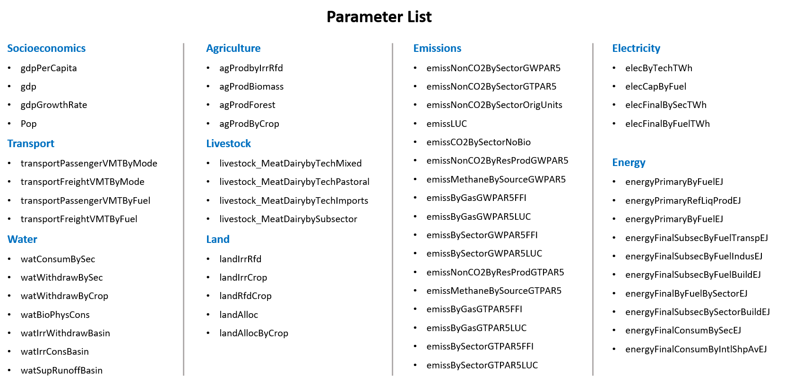

Introduction

gcamextractor is a package to extract GCAM data into standardized data tables which can be used downstream in other models. gcamextractor uses rgcam to connect to GCAM databases and then processes the data into more commonly used units as well as re-organizes the data into tables with common column names. This allows all the data to be saved in combined tables. Additionally, gcamextractor aggregates data by parameter, class 1 and class 2. This allows users to quickly plot and analyze data at different degrees of detail.
gcamextractor::readgcam will return a list as csv files as well directly as a list of R tables containing:
- data: a dataframe with the original data
- dataAggParam: a dataframe with the data aggregated to the parameter
- dataAggClass1: a dataframe with the data aggregated to class 1
- dataAggclass2: a dataframe with the data aggregated to class 2
- dataAll: a dataframe with the original data as well as original queries and values before any conversions
- scenarios: A list of the scenarios
- queries: A list of the queries used to extract the data
The figure below shows the workflow of how gcamextractor connects to a GCAM database and its outputs.

Read GCAM database
library(gcamextractor)
path_to_gcam_database <- "E:/gcamfolder/output/database_ref" # Change the path based on your GCAM database location
gcamextractor::params # view available parameters
dataGCAM <- gcamextractor::readgcam(gcamdatabase = path_to_gcam_database,
regionsSelect = c("Colombia"), # Set to "All" to read in all available regions
paramsSelect = "pop",
folder = "my_output_folder") # Set to "All" to read in all available params
# View your data
df <- dataGCAM$data; df
dfParam <- dataGCAM$dataAggParam; dfParam
dfClass1 <- dataGCAM$dataAggClass1; dfClass1
dfClass2 <- dataGCAM$dataAggClass1; dfClass2Read GCAM .Proj file
Initial extraction of GCAM data can take a while and so gcamextractor also includes the option to save the raw extracted outputs as .Proj files which can be shared and read in as well. A default example .Proj file gcamextractor::exmapleGCAMproj is included with the package. The following script shows how this can be read into gcamextractor.
library(gcamextractor)
dataGCAM <- gcamextractor::readgcam(dataProjFile = gcamextractor::example_gcamv54_argentina_colombia_2025_proj, # Or provide path to .proj file
folder = "my_output_folder")Output Structure
The following figure shows the column headers of the dataAll outputs from gcamextractor. Other tables have a subset of these columns, such as in the case of data which only keeps relevant columns and drops columns such as origScen and origQuery which refer to the original data in GCAM. Other tables such as dataAggClass1 removes the class 2 columns and then aggregates the data over class 1 variables.

Available Paramaters
Users can get a list of all available params and queries as shown below. The parameters page lists details on each parameter, how it was calculated and cites any sources when available. gcamextractor::map_param_query gives a list of all parameters and the corresponding queries used to extract that data from GCAM. Additionally, gcamextractor::map_param_query also groups the various parameters into higher level groups which can then be called in the paramSelect argument of gcamextractor to extractor all the params in those groups. The groups also include curated parameters for particular models such as CERF and GO.
library(gcamextractor)
gcamextractor::params # Get all params
gcamextractor::queries # Get all queries used
gcamextractor::map_param_query # Get a table of params and the relevants queries used to extract and calculate them.